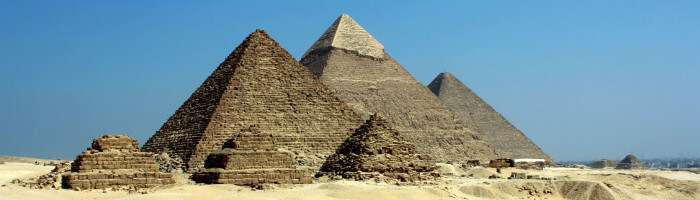

Africa
If you're looking for your next travel destination but aren't quite sure where to go yet, consider a trip to Africa. A vast and highly diverse continent full of fascinating cultures, dramatic scenery and extraordinary animals, Africa offers some of the most incredible travel experiences in the world.
Here's what to visit:
- Serengeti National Park, Tanzania
- Victoria Falls, Zambia & Zimbabwe
- Giza Necropolis, Egypt
- Masai Mara National Reserve, Kenya
- Cape Town, South Africa
Serengeti National Park, Tanzania
The park is worldwide known for its abundance of wildlife and high biodiversity. The migratory - and some resident - wildebeest, which number over 1.5 million individuals, constitute the largest population of big mammals that still roam the planet. They are joined in their journey through the Serengeti-Mara ecosystem by 200,000 plains zebras, 300,000 Thomson's gazelles and Grant's gazelle, and tens of thousands of topi and Coke's hartebeest. Masai giraffe, waterbuck, impala, common warthog and hippopotamus are also abundant. Some rarely seen species of antelope are also present in Serengeti National Park, such as common eland, klipspringer, roan antelope, bushbuck, lesser kudu, fringe-eared oryx and dik dik.
Victoria Falls, Zambia & Zimbabwe
Victoria Falls and the 'rainforest' that surrounds it are part of a UNESCO World Heritage Site. That means that they have been recognized to have outstanding universal value. One reason for this is that the main falls form the highest, widest sheet of continually falling water in the world – twice as high as Niagara Falls and around 500m/1,640ft wider. The volume of water is impressive too: it is said that the whole annual consumption of New York City goes over the falls in just three-and-a-half days during peak flood season in March and April. The force of the water as it thunders into the gorge drives spray into the air and covers everything in mist. For this reason, the locals call Victoria Falls 'Mosi-oa-Tunya', meaning the smoke that thunders. You can see this 'smoke' up to 50km/31mi away.
Giza Necropolis, Egypt
The one and only seven wonders of the ancient world that remains relatively intact. This complex includes the three pyramid complexes, the Khufu, Khafre, Menkaure and the massive sculpture known as the Great Sphinx. Be cautious when choosing a local horse or camel ride, make sure you discuss the price and where you go first. At the end of the ride, pay what you had agreed. If you are happy and wish to give a tip, do it because you choose. Don't feel pressured into giving extra. Just smile and walk away. Do not attempt to climb the Pyramid, it is forbidden and extremely dangerous. Do bring lots of water with you. Do enjoy the ride and view of the necropolis. It is a once in a lifetime experience.
Masai Mara National Reserve, Kenya
The Masai Mara also hosts the annual wildebeest migration between the months of July-October, as the herds will make their way from Tanzania's Serengeti National Park, crossing the Nile crocodile-infested Mara River which forms an international border between Kenya and Tanzania, in search of better water and grass resources. Often described as nature's greatest spectacles, the great migration is one of Africa's most dramatic survival stories. To stay up to date on the whereabouts of the herds, here's a great wildebeest migration tracking map.
Cape Town, South Africa

Cape Town is one of South Africa's most cosmopolitan and vibrant cities. A city blessed with natural beauty in spades, Cape Town compliments its many blessings from Mother Nature by being a diverse and fascinating city in its own right. From the heights of Table Mountain to the dramatic stretches of coastline, Cape Town's wonderful weather year-round makes it a popular destination for beach lovers and wine aficionados alike. Its world-famous Kirstenbosch Botanical Gardens and Green Point Park compliment these natural blessings wonderfully. The nearby Boulders Penguin Colony is also a popular spot due to its cute but loud jackass penguins.